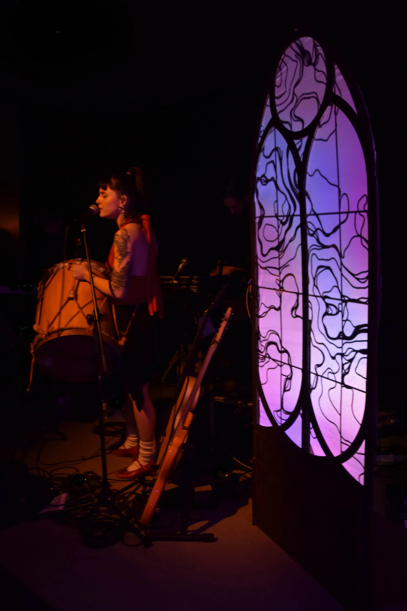
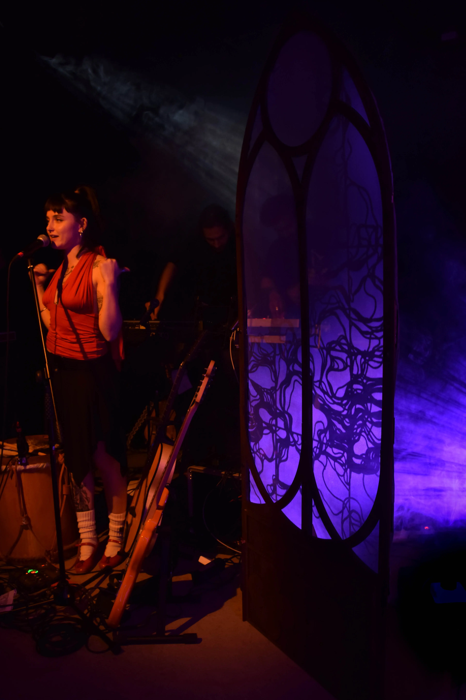
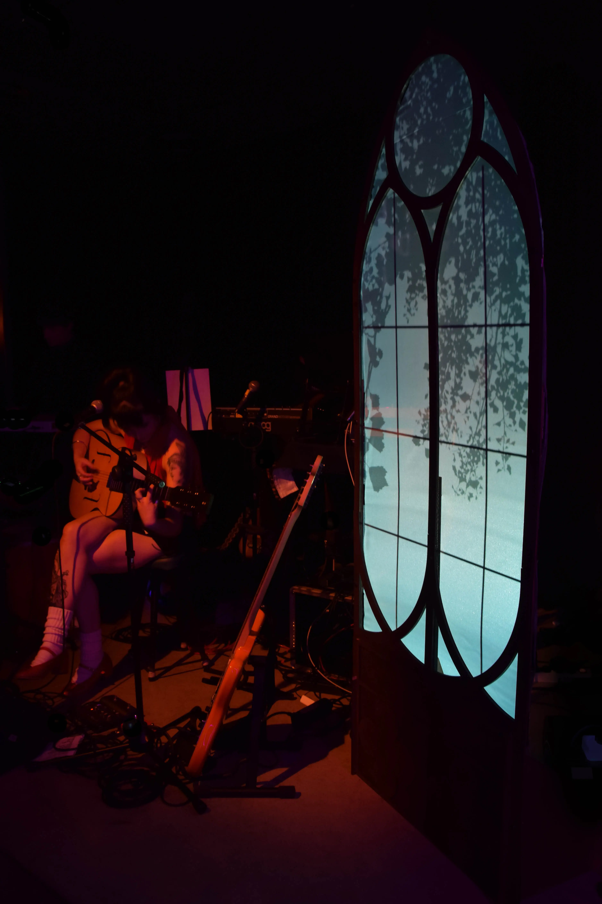
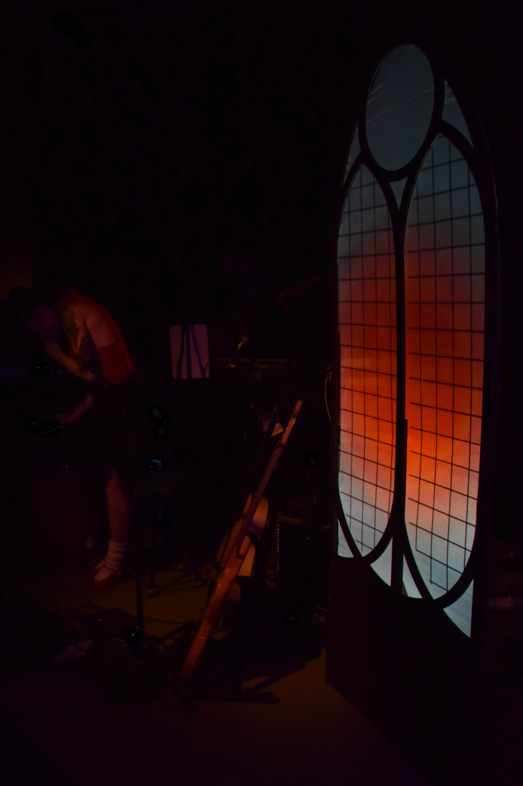
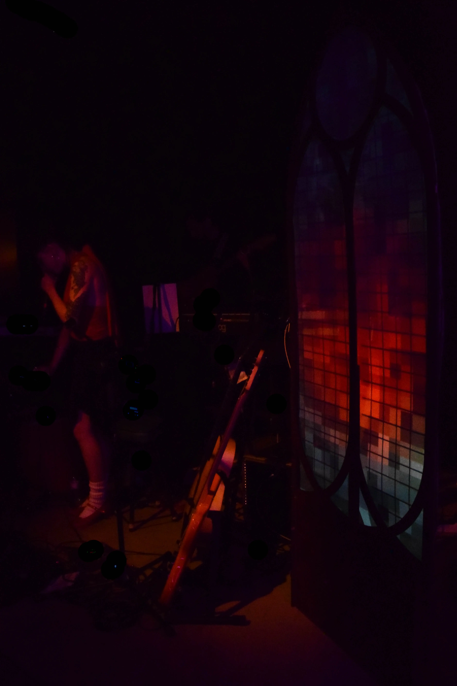
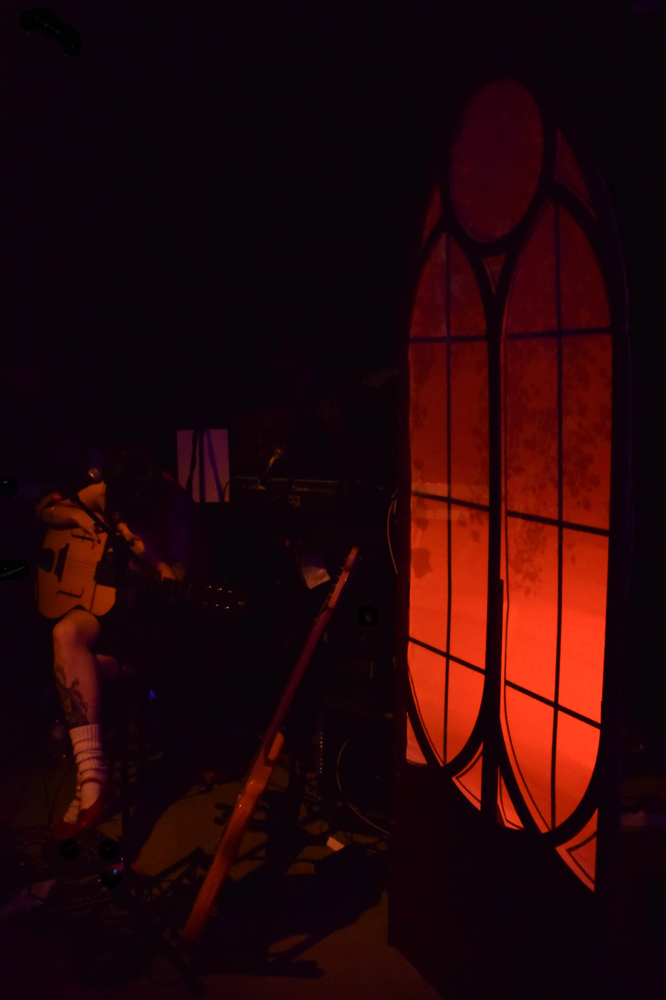
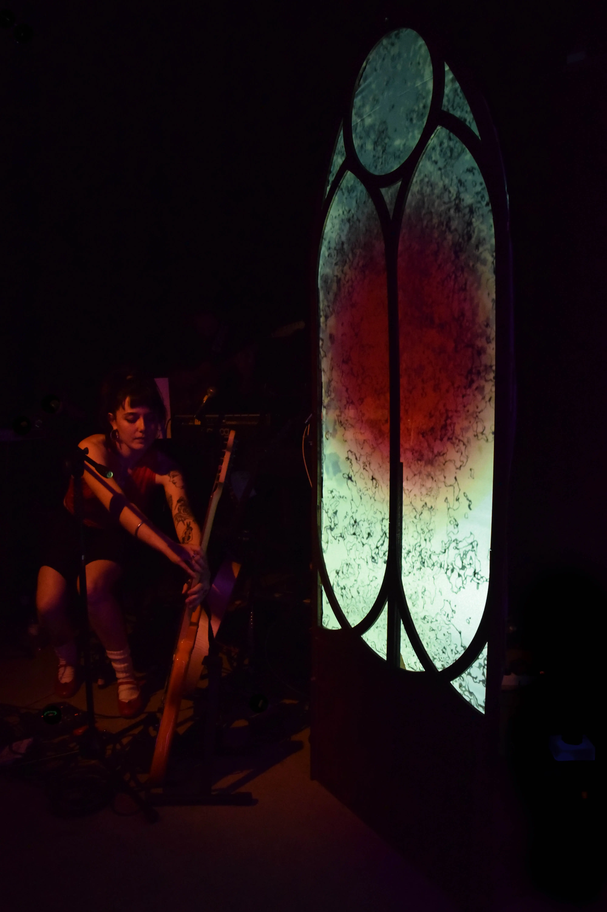

VJ Set design for Marisol Eichborn band
November 2025
Heliogabal, Barcelona



Close collaboration with the musicians alongside our multi-disciplinary team of 4, made La Ventana a sturdy, dynamic and seamless addition to the 40 minute set. Creative use of CAD was vital in making the installation transportable and an easy assemble amidst concert preparations. The blending of our work with the band and their concert was key, so the rhythm and development of the projection were VJ-ed live.



